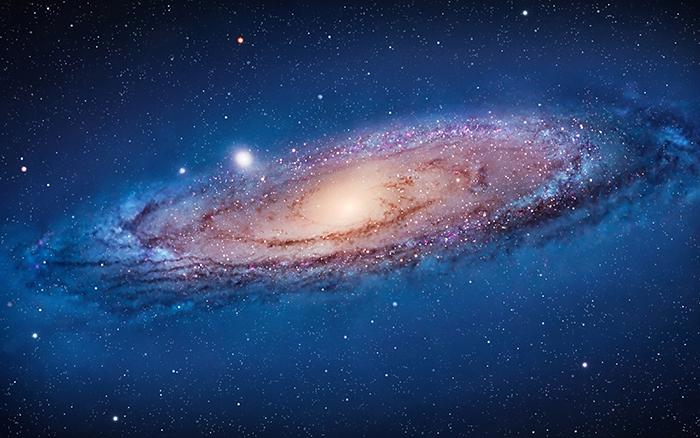

2.地心说
地心说的起源很早，最初由古希腊学者欧多克斯提出，经亚里斯多德完善，又为托勒密进一步发展成为一个盛行于古代欧洲1000多年的宇宙学说体系。

首页＞天文学史
在古代世界各地都在不停探索，也有了各自的成就。中国命名星座和恒星，记录了世界最早的日食，采用28星宿划分天空，最早测定黄赤交《汉书·五行志》记载有世界上最早的太阳黑子记录。 巴比伦创建了第一份星历表，发现日月食循环的沙罗周期。做出最早的哈雷彗星记录.古希腊提出了地心说。